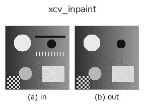

restoration op• Datenarten: image → image
• Aufruf: fullseye.apply(img, "xcv_inpaint", a=0.5, b=0.5) (das 2-D-Modell ist ein Bild plus zwei skalare Regler a,b∈[0,1])

*Die Abbildung ist die tatsächliche Ausgabe auf einer synthetischen 128×128-Eingabe. Links Eingabe, rechts Ausgabe. Punktwolken als Draufsicht-Streudiagramm (Helligkeit = z), 1-D-Reihen als Linie, Volumen als Maximum-Projektion entlang z, Videos als mittleres Bild, komplexe Bilder als Betrag; Rückgabewerte, die kein Bild ergeben, werden als Werte gezeigt.*
*Regler a ändert die Ausgabe nicht (gemessen: identisch bei 0,1 / 0,5 / 0,9).*
*Regler b ändert die Ausgabe nicht (gemessen: identisch bei 0,1 / 0,5 / 0,9).*
Auf anderen Bildern (synthetische Szene / Foto / Münzen. Obere Reihe: Eingaben, untere Reihe: deren Ausgaben. Regler auf Standard):
▸ xcv_inpaint: andere Eingaben (Doku-Website)
*Die 4. Spalte ist eine Farb-Eingabe (H,W,3). Dieser Op verarbeitet Farbe, ohne Kanäle zu vermischen (er faltet den Farbkanal nicht als dritte Raumachse).*
Inpainting, das fehlende Bereiche schätzt und ausfüllt.
Nach der Umwandlung in 8bit werden extrem helle (>235) / dunkle (<20) Pixel als "fehlend" betrachtet, automatisch maskiert und mit dem Telea-Verfahren von OpenCV (basierend auf der Fast-Marching-Methode, cv2.INPAINT_TELEA) aus der Umgebung aufgefüllt. Eine Variante mit anderem Algorithmus nach derselben Idee wie xsk_inpaint (biharmonisches Verfahren).
Verwendet eine Nachbarschaft mit Radius 3 Pixel (fest). a, b werden nicht verwendet. Da die Schwellwerte fest sind, können auch eigentlich bedeutsame ausgefressene/abgesoffene Pixel aufgefüllt werden.
• Leitfaden zur Familie gallery2d_smoothing_rank
• Katalog der Beispieldaten (Download-URLs / Lizenzen) — 2-D nutzt skimage.data (BSD/Public Domain) plus synthetische Bilder, 3-D nennt Download-URLs echter Datenquellen (Stanford, PDS, …).
• Herkunft und Literatur der Operatoren — die Quellen der Forschung/Verfahren, auf denen diese Operatorfamilie beruht.
• Der kanonische Algorithmus (Autor, Jahr) und seine Anwendungen stehen im Familienleitfaden oben.
Das Programm unten ist nachweislich lauffähig (gleiche Eingabe wie die Abbildung). In der Studio-Hilfe wird dieser Block zu Schaltflächen, die es sofort laden und ausführen.
xcv_inpaint 0.50 0.50
▸ Diese Pipeline laden · Laden & ausführen
• gallery2d_smoothing_rank — py -3.11 examples/gallery2d_smoothing_rank.py
image als Eingabe)identity · gaussian · mean_box · bilateral · unsharp · median · min_filter · max_filter
restoration)xsk_inpaint · xsk_richardson_lucy · xsk_unwrap_phase · xsk2_wiener · xcv3_inpaint_ns · iv_richardson_lucy · iv_wiener_deconv_spatial · iv_unsharp_deblur
*Provenance: ops.py — 2D Operator-Registry. Diese Notiz wird von tools/opdocs.py md erzeugt (nicht von Hand bearbeiten).*
© 2026 Kazufumi Furuse — Fullseye operator documentation. Licensed under Apache-2.0.